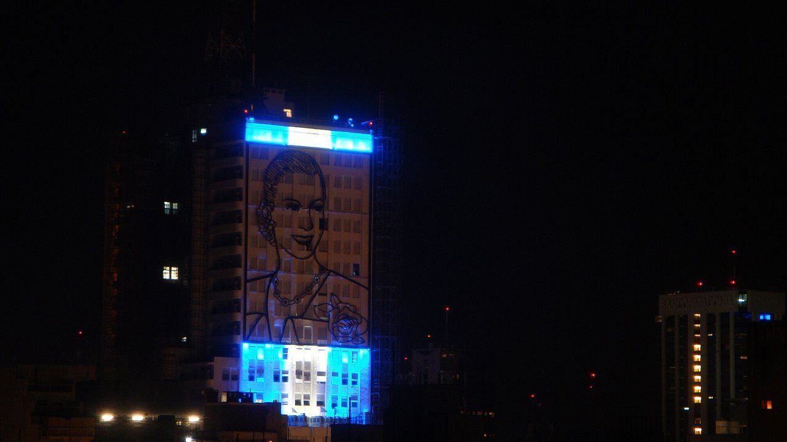

Race, Avenida 9 de Julio

Behind
Best +0:01
371W
Target 418 W-47 W
- Cadence
- 87rpm
- Heart
- 140bpm
- Speed
- 26.5km/h
Work8 of 24
1:31
Next: · 2:00 at level 15
+0.2%
8 m climbed
6.74 km
22
Resistance / 32
Solo races your best-time ghost: position reads Ahead or Behind, and solo alone gets a Pause button. Frozen at 14:59.